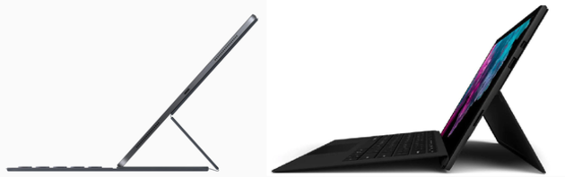

Technologie : Apple et Microsoft ont suivi des chemins différents, mais leurs dernières innovations pour remplacer les ordinateurs portables sont étonnamment similaires. L'iPad Pro ou la Surface Pro 6 peuvent ils devenir votre prochain outil de travail au quotidien ?

HLors de la Worldwide Developers Conference (WWCD) en juin, Apple a dévoilé quelques changements importants à son système d'exploitation pour iPad. Au point de baptiser la version remaniée avec un nouveau nom, qui lui est propre : iPadOS. Ces changements rapprochent la tablette phare d'Apple .
Du point de vue du hardware, le dernier iPad Pro 12,9 pouces, si on lui ajoute le clavier Smart Folio et le Apple Pencil, est remarquablement similaire au Surface Pro 6 de Microsoft.
La Surface Pro 6 quant à elle est désormais remplie d'améliorations minuscules mais significatives par rapport à ses prédécesseurs.
Apple a pris le chemin inverse avec l'iPad, en ajoutant à contrecoeur des capacités semblables à celles d'un PC au matériel de l'iPad, mais en résistant fermement aux appels pour rendre le Mac plus semblable à un iPad. Mais malgré ces améliorations matérielles, l'expérience iPad est restée assez constante au fil des ans. Jusqu'à maintenant.
Oubliez le mode sombre. Les changements vraiment significatifs de l'iPadOS annoncés au WWDC 2019 sont ceux qui le rendent, dans son utilisation quotidienne, plus semblable à un PC ou un Mac. Il y a enfin la prise en charge des périphériques de pointage externes, de sorte que vous n'êtes pas obligé de faire glisser votre doigt sur l'écran pour faire une sélection. Il y a un nouveau support pour les périphériques de stockage externes, un ensemble étendu d'outils de gestion de type Finder pour les fichiers locaux. De nouvelles astuces de gestion des fenêtres, et même le support des widgets sur l'écran d'accueil.